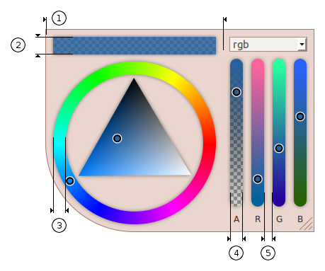

Dimensions

- Height of the preview box. Set in CSS file, default 25px.
- Width of the color picker. Set with the "width" API property, default 180px.
- Margin around the preview box. Set in CSS file, default 10px.
- Diameter of the hue selector. Cannot be set manually, default: total picker width ② minus total picker margin ⑥.
- Fixed margin between the hue selector and the saturation/luminosity selector, always 5px.
- Fixed margin around the color picker. Cannot be set manually, always 10px.
- Width of the hue selector. Set with "ringwidth" API property. The value is a percentage of the total width of the color picker, as occupied by both sides of the hue selector. Default
0.18
- Width of border around the color picker. Set in CSS file, default 1px.